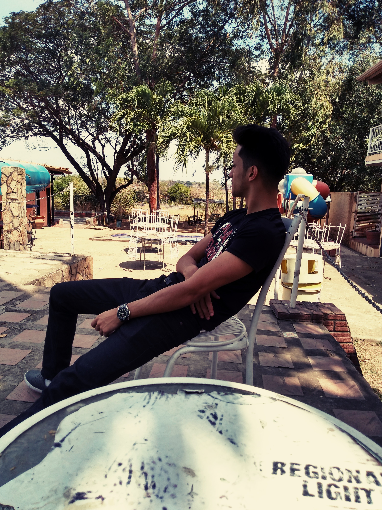
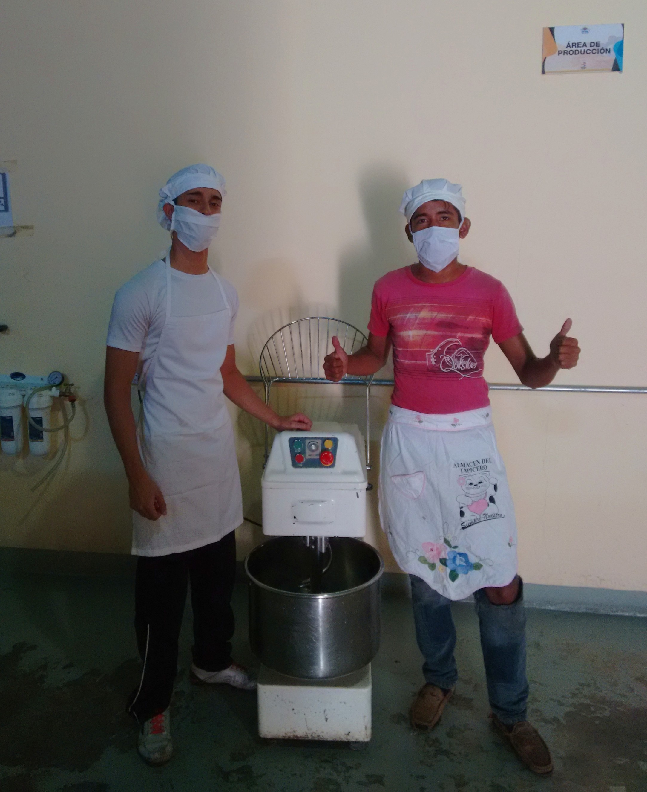
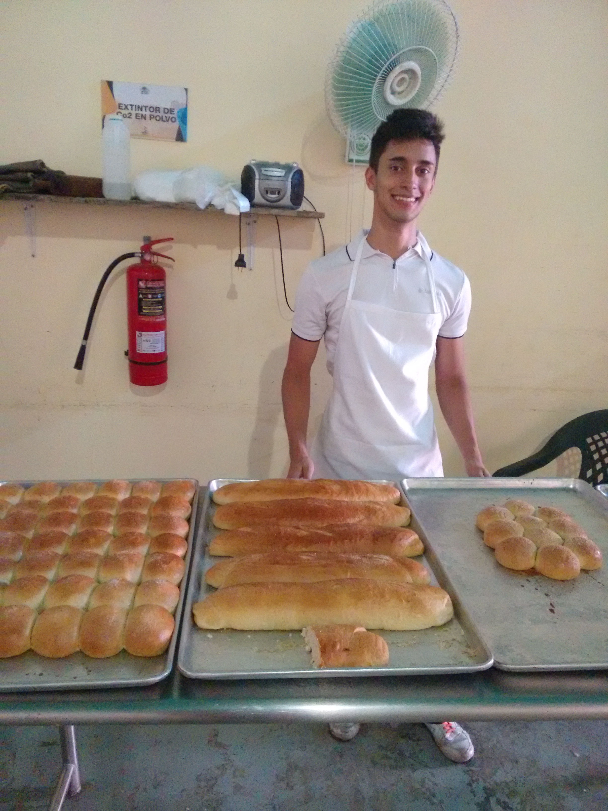
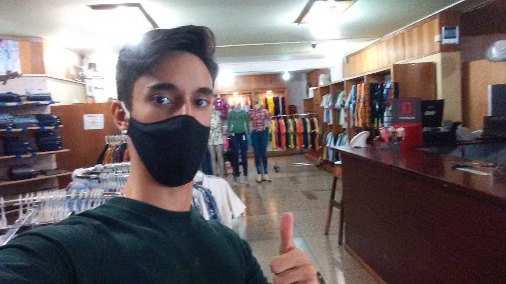
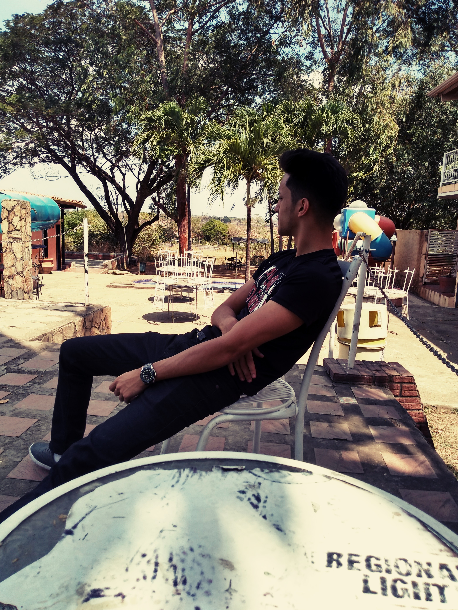
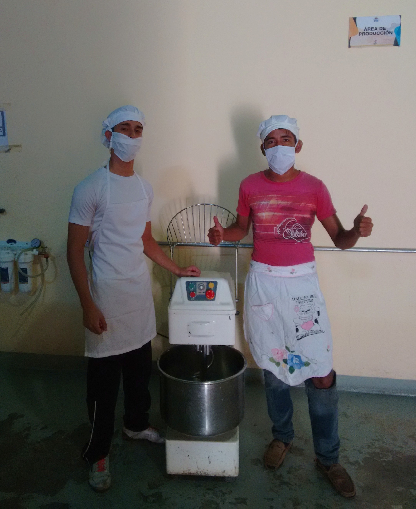
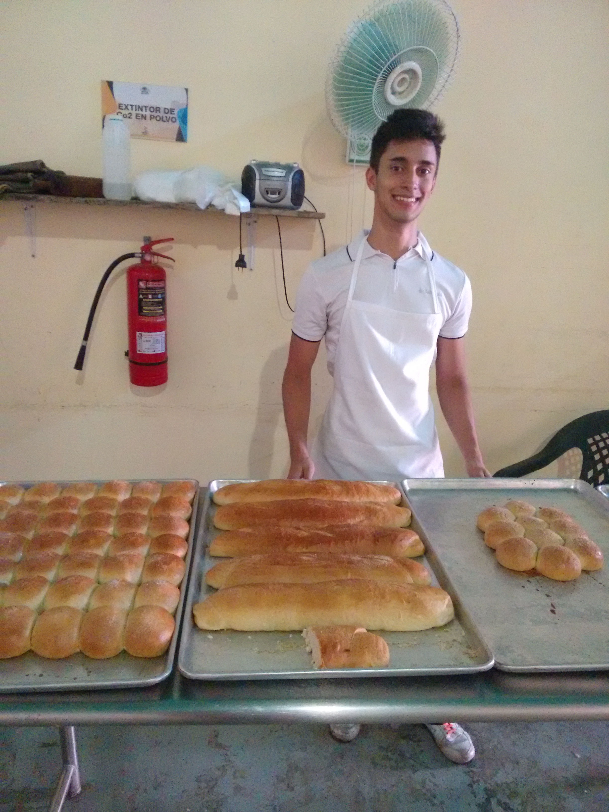
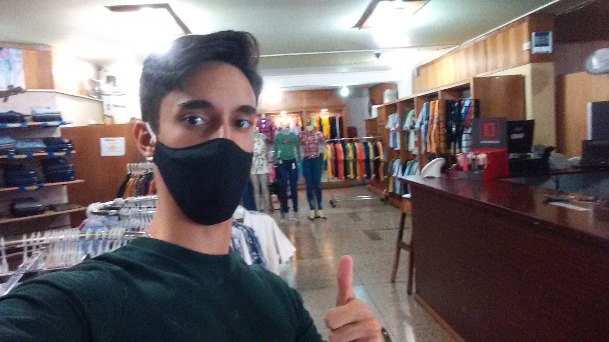

Historia personal
Nací en la ciudad de Barinas, desde pequeño no era una persona muy activa socialmente y siempre me interesé por la tecnología, más allá de lo juegos con los cuales me llegaba a entretener, tenía la curiosidad por saber cómo funcionanban estos, las animaciones, los diálogos y sobre todo la creación de los mundos que existen dentro de los mismos. A día de hoy gozo de una buena formación tanto social como de educación por parte de mi familia y de buen empleo como atendedor, me interese por la carrera de informática para tener una idea más profesional sobre el campo de la tecnología (Programación, Componentes electrónicos, procesadores, etc.), así mientras vaya llevando esta carrera que, por cuestiones de la reciente pandemia no ha sido de total agrado, se hace lo que se puede y de verdad no he tenido malas experiencias con las clases a distancias, poder elegir la rama con cual me graduare para ejercerla completa y eficazmente.
 






